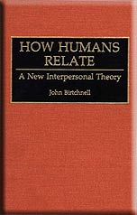
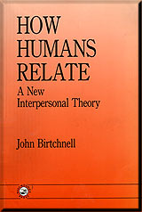
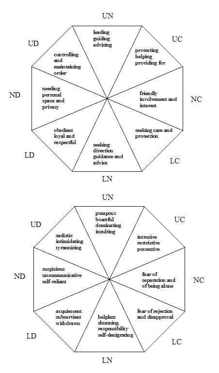
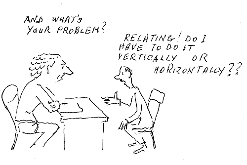
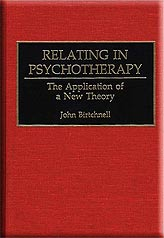
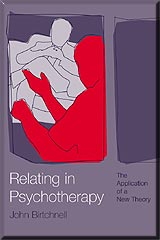
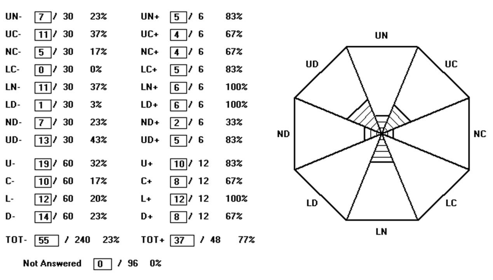
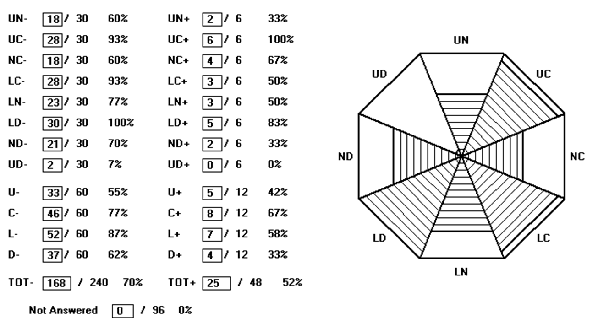
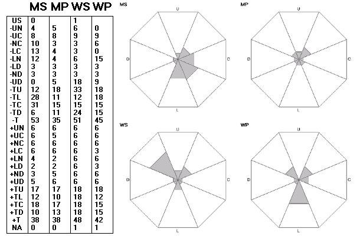
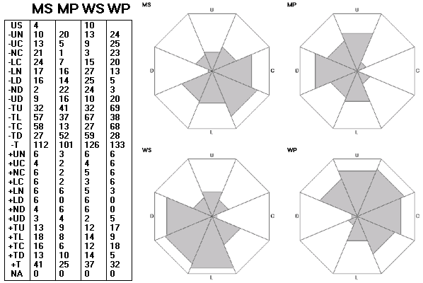

Relating Theory
Relating Theory
Relating is that which one person does to another, or to others, so it is a characteristic of an individual. Relating can apply as much to what happens in an instant as to what happens over the course of a lifetime; so offering someone a seat on a bus is as much relating as is being someone who goes through life needing to help people. A person can relate as much to internalized people and to people in the real world. Birtchnell wrote in his book (Birtchnell, 1993/96a) that relating is so essential a part of our being that we never stop doing it, just as our hearts never stop beating.
Relating theory, previously called spatial theory, began to take shape in the late nineteen eighties. It grew out of considerations of the nature of psychological dependence. Its link with psychological dependence was apparent in an early form of it (Birtchnell, 1987). It grew during a period when he had frequent contact with John Bowlby, and another formative influence was his attempt to draw a clear distinction between it and attachment theory (see Birtchnell, 1997a). Bowlby died in 1990. As early as 1991, Professor Russell Gardner wrote, "Dr Birtchnell's spatial schema has considerable potential for analyzing data on interpersonal relationships." It was Maurice Lorr (personal communication, 1987) who first brought to his attention its resemblance to interpersonal theory, a theory which he himself had helped to develop (Lorr & McNair, 1963). In two papers (Birtchnell, 1990 and Birtchnell, 1994) he outlined the differences between his own theory and interpersonal theory. Spatial theory, as it was then called, was first fully developed in his book, How Humans Relate: A New Interpersonal Theory, published first as a hardback (Birtchnell, 1993) and later as a paperback (Birtchnell, 1996a).
 BOOK CONTENTS:
- Relating: Some general principles
- The two axes of relating
- Further development of the two axes
- Maturational processes within the two axes
- Closeness
- Distance
- Upperness
- Lowerness
- The interpersonal octagon
- The interpersonal circle
- Conclusion
Of the theory, Professor A.T. Beck (Philadelphia) wrote (in the ASCAP Newsletter 1994), "I am convinced that John Birtchnell is on to something important in terms of his vertical and horizontal axes." Professor Paul Gilbert wrote, "He is to be congratulated for bringing together such a diverse literature and shedding new light on the complexities of human relating." (both quotations on the cover of the paperback). " Professor Russell Gardner (Texas) wrote, in the Foreword to the book, "Until now we have had no one comprehensive system for organizing and systematizing people's communicational attributes." Denis Trent (1994) in a review of the book, wrote "Birtchnell's theory is comprehensive and well thought out. Hidden within the content, however, is his ability to present a highly complex and well-integrated theory in a clear and easily understandable style." Carolyn Reichelt (1994) wrote, "When John Birtchnell's spatial model of relating first appeared in the ASCAP Newsletter, I was somewhat dubious. I suffer from a bias against trying to jam the complexity of the human spirit into little compartments. But in this case, further essays had increasingly piqued my interest, so that when called and asked if I would like to review the book, I agreed. It seemed worthwhile to see if a full exposition of the theory would be persuasive enough to quell my remaining doubts. I'm glad I did, because I'd have missed an enjoyable and stimulating read if I'd refused. I recommend this book to anyone interested in human feelings and interactions; not just professionals, but any intelligent reader”.
The essentials of relating theory
- Relating occurs along two intersecting axes, a horizontal one, concerning a need for involvement with others (closeness) versus a need for separation (distance), and a vertical one, concerning a need to relate from above downwards (upperness) versus a need to relate from below upwards (lowerness).
- The theory proposes four states of relatedness: upper close, lower close, upper distant, and lower distant.
- The emotions convey to us whether we are on course in attaining and maintaining the states of relatedness.
- Whilst we are born with innate dispositions to the four states of relatedness, we need in the course of maturation, to develop competence in attaining and maintaining each of them.
- A person who is competent in all states of relatedness is called versatile.
- Competent relating is called positive, and relating that falls short of competence is called negative. One of the objectives of psychotherapy is the elimination of negative relating.
- There are four intermediate states that result from a blending of a horizontal state and a vertical state. These are called upper close, lower close, upper distant, and lower distant. The four pure states (which are called neutral) and the four intermediate states are organized into a theoretical structure that is called the interpersonal octagon.
Being related to
Just as we relate to people all of the time, we are being related to (by others) all of the time. We do not always know that we are being related to. A celebrity is unaware of all the feelings that all kinds of other people have towards her/him. All that applies to relating applies also to being related to. It can apply as much to what happens in an instant as to what happens over a lifetime. It can apply as much to internalized people as to people in the real world. People can be profoundly affected by the way that certain others relate to them. Relating and being related to are combined in the process of interrelating, and the CREOQ (see below), which measures interrelating, has separate measures of relating and being related to.
Classes of negative relating
Classes of negative relating are forms of relating incompetence. Since people need to relate in order to attain desirable states of relatedness, even if they cannot relate competently to attain them they will relate incompetently to do so. The three main forms of negative relating are called avoidant, insecure, and desperate. In avoidant relating, the person is so frightened of a particular state of relatedness that she clings desperately to the opposite state. Thus, a person who is frightened of closeness clings to distance. Insecure relating means that the person tries to attain or maintain a particular state of relatedness but is constantly afraid s/he is going to lose it. Thus an insecurely upper person is constantly trying to put other people down so as not to be dislodged from her/his position of upperness. Desperate relating means that the person will do anything to get or keep a particular state of relatedness, irrespective of what it does to the other person. Thus a desperately close relater will impose her/his closeness upon another even if s/he is not welcome. A desperately lower person will plead and beg and feign helplessness in order to get others to relate downwards to her/him. The measures of relating (see measures of relating section) are predominantly measures of negative relating.
Figure 1. Positive (upper diagram) and negative (lower diagram) forms of relating. The pairs of initial letters are abbreviations for the full names of the octants given in the text. The diagrams first appeared in Birtchnell, J. The interpersonal octagon: An alternative to the interpersonal circle. Human Relations, 47, p. 518 and 524. Copyright The Tavistock Institute, 1994. Reproduced by permission.
The difference between relating and interrelating
Whereas relating is a characteristic of a person, interrelating is a characteristic of a pair of people (or sometimes of a number of people). When two people are interrelating each is both relating to and being related to by the other. Interrelating can be brief (as when a person makes a purchase in a shop) or can be extended over a period of time (as in a long term relationship). The CREOQ (see below) is a measure of interrelating.
Relating theory as the basis for the measurement of relating and interrelating
Relating theory was developed largely as a basis for the design of instruments for the measurement of relating; though once it had become established it became a useful aid for understanding a person's relating behaviour, as for instance in psychotherapy.
A person's general relating tendencies can be measured by means of the Person's Relating to Others Questionnaire (PROQ) or various derivatives of it. Objectively, it can be measured by the checklist called Observation of Relating Behaviour (ORB).
All measures of interrelating are based upon a cluster of four questionnaires by which each of two people rate how s/he relates to the other and the other relates to her/him. The main measure of interrelating was designed for use with couples and is called the Couple's Relating to Each Other Questionnaire (CREOQ).
Relating theory and personality disorders
Relating theory is useful in the classification of personality disorders (Birtchnell, 1996b, 1997b; Birtchnell & Shine, 2000) and also in their treatment (Birtchnell & Bourgherini, 2000)
Relating theory in psychotherapy, couple therapy and family therapy
Relating theory has particular application in the diagnosis of relating difficulties as they present in psychotherapy, couple therapy and family therapy and in the development of strategies for treating them.
References
Beck, A.T. (1994) Letters The ASCAP Newsletter, Volume 7 No 2, 4-5
Birtchnell, J. (1987) Attachment detachment, directiveness receptiveness: A system for classifying interpersonal attitudes and behaviour. British Journal of Medical Psychology, 60, 17 27.
Birtchnell, J. (1990) Interpersonal theory: Criticism, modification and elaboration. Human Relations, 43, 1183-1201.
Birtchnell, J. (1993) How Humans Relate: A New Interpersonal Theory. A volume in the series Human Evolution, Behavior & Intelligence. Praeger: Westport, CT. Paperback version published by Psychology Press, Hove, UK, 1996a.
Birtchnell, J. (1994) The interpersonal octagon: An alternative to the interpersonal circle. Human Relations, 47, 511-529.
Birtchnell, J. (1996b) Detachment. In Costello, C.G. (Ed.) Personality Characteristics of the Personality Disordered. Wiley: New York.
Birtchnell, J. (1997a) Attachment in an interpersonal context. British Journal of Medical Psychology, 70, 265-279.
Birtchnell, J. (1997b) Personality set within an octagonal model of relating. In Plutchik, R. & Conte, H.R. (Eds.) Circumplex Models of Personality and Emotions. American Psychological Association Press: Washington, D.C.
Birtchnell, J. (2001) Relating therapy with individuals, couples and families. Journal of Family Therapy, 23, 63-84.
Birtchnell, J. & Bourgherini, G. (1999) Interpersonal theory and treatment of dependent personality disorder. Maffei, C. (Ed.) Treatment of Personality Disorders. Plenum Press: New York.
Birtchnell, J . & Shine, J. (2000) Personality disorders and the interpersonal octagon. British Journal of Medical psychology, 73, 433-448.
Gardner, R. (1991) Birtchnell-Gardner Exchange: X-Y plotting used in the spatial model. Across-Species Contrast Comparisons and Psychopathology Newsletter, 4, (12) 3-9.
Lorr, M. & McNair, D.M. (1963) An interpersonal behavior circle. Journal of Abnormal and Social Psychology, 67, 68-75.
Reichelt, C. (1994) Book review in Across-Species Contrast Comparisons and Psychopathology (ASCAP) Newsletter, 7, (4) 8-10.
Trent, D. (1994) Special Review in British Journal of Medical Psychology, 67, 207-08.
Hayward, M., Denney, J., Vaughan, S., & Fowler, D. (2008). The voice and you: development and psychometric evaluation of a measure of relationships with voices. Clinical psychology & psychotherapy, 15(1), 45–52. https://doi.org/10.1002/cpp.561
Relating in Psychotherapy
This is the title of his book that was first published (by Praeger) in hardback in 1999 and published (by Brunner-Routledge) in paperback in May 2002. The object of the book is to apply relating theory (see section on Relating Theory ) to what goes on in psychotherapy. Chapters describing relating theory alternate with chapters describing how the theory can be applied to the relating of both different kinds of psychotherapist and different kinds of client. Chapter 9 describes the questionnaires for measuring relating and interrelating (see section on Measures of Relating and Interrelating ), and indicates how these can be used in the initial assessment of the psychotherapy patient, or the couple seeking couple therapy, and for the assessment of improvement at stages through therapy and at the end of therapy.
It needs to be stressed that, whether or not the therapist or the client is aware of it, and whatever form of therapy is used, relating forms a major part of what gets talked about in therapy, and relating deficits get corrected over the course of therapy.
Towards the end of the book the term relating therapy emerges, to refer to a form of psychotherapy in which therapist and client (or a couple), work collaboratively together to correct specific relating deficiencies. In relating therapy, more so than in other forms of therapy, the part played by the relating of others towards the client is focused upon, and the circular nature of relating and being related to is explained. The client is helped to devise strategies for coping with the negative relating of certain key others towards her/him, or the client may even be advised to limit her/his involvement with such key others.
An integral component of relating therapy is the use of a measuring instrument (see section on Measures of Relating and Interrelating) to indicate areas of deficiency and to serve as a monitor of change.
 BOOK CONTENTS:
- Relating and its relevance for psychotherapy
- The inner brain and the outer brain
- The proximity axis in relating
- The proximity axis in psychotherapy
- The power axis in relating
- The power axis in psychotherapy
- Interrelating
- Interrelating in psychotherapy
- Measuring relating and interrelating in psychotherapy
- The emergence of a new approach to psychotherapy
The book has been well received:
Dr Derry Macdiarmid, Senior Fellow in Psychotherapy, Guy's Hospital Medical School, London, wrote, "This is a very rich book...a marvellous digest of a very broad range of approaches...a significant step forward in the integration of the psychotherapies...a great pleasure to read, especially because of the wealth of human observation which it incorporates."
Tirril Harris ( 2000), Senior Research Fellow, Socio-Medical Research Centre, Guy's, Kings and St Thomas' School of Medicine, London, wrote "What is rewarding about this book is the structural clarity and simplicity of its perspective - something so much easier to use with psychotherapy clients than customary psychodynamic terminology...despite its apparent origins in the academic realms of psychological theory and psychometric measurement, it is as a book on the craft of psychotherapy that the book can be even more highly valued."
Dr Jill Savege Scharff (2000), of the International Institute of Object Relations Therapy, Washington, wrote, "For individual, group, couple and family therapists, Relating in Psychotherapy does an excellent job of providing a theory that helps in thinking about two important aspects of human relating, measuring difficulty in these areas, and providing a psychotherapeutic approach that is valid in many formats and the effect of which is measurable. Above all, this book empowers clinicians to do their own clinical outcome research which can restore confidence in their methodology at a time when its efficacy has been challenged by a society that tends to choose medication over psychotherapy."
Dr Anthony Bateman (2000), Secretary of the Psychotherapy Faculty of the Royal College of Psychiatrists, wrote "The book is easy to read, well structured, and demonstrates the author's wide knowledge of different psychotherapies...The author should be congratulated for his painstaking work in developing a theory, putting it into practice, and producing meaningful measurement. This is a formidable attempt to produce an evidence-based psychotherapy."
Dr Dale Mathers (2001), of the International Association of Analytical Psychology, wrote, "I commend this book to you. The theory cuts across all forms (schools) of therapy, and is a way of describing each school in terms of relating, in both the client and the therapist...I hope it will be widely read”.
References
Bateman, A.W. (2000) Book Review, British Journal of Psychiatry, 176, 499-503.
Birtchnell, J. (1999) Relating in Psychotherapy: The Application of a New Theory. Westport, Con.: Praeger. Came out as a paperback (Brunner-Routledge) in May, 2002.
Harris, T. (2000) Book Review, British Journal of Medical Psychology, 73, 567-568.
Mathers, D. (2001) Book Review. British Journal of Psychotherapy, 18, 134-137.
Savege Scharff, J. (2000) Book Review, American Journal of Psychotherapy, 54, 118-120
Measures of relating and interrelating
In this section the measures that are based upon relating theory (see section on Relating Theory ) will be presented. These measures have evolved from earlier measures (see Birtchnell, 1988, Birtchnell, Falkowski & Steffert (1992), though once relating theory had fallen into place, they replaced the earlier measures, and always contained eight scales that were based upon the octants of the interpersonal octagon (see section on Relating Theory ).
The Person's Relating to Others Questionnaire (PROQ)
The PROQ (as distinct from the PROQ2) was the earliest relating measure and was described in Birtchnell, Falkowski & Steffert (1992). It was later described in Chapter 9 of both How Humans Relate (Birtchnell, 1993/6) and Relating in Psychotherapy (Birtchnell, 1999/2002). It is a 96-item, self-administered questionnaire, with twelve items contributing to each of the eight scales, which correspond to each octant of the interpersonal octagon (see section on Relating Theory ). Of the twelve items, two refer to positive relating, and are not normally scored, and ten refer to negative relating. The positive items are included to give respondents something good to say about themselves. There are four options for each item providing a score range of 0-3. Thus for each octant scale, the score range is 0-30, and the total score, combining the scores for each scale has a maximum of 240.
The PROQ2
In 1995, a revised version of the PROQ was produced, called the PROQ2. It aimed to improve the clarity and factorial structure and to reduce the correlation between scales. The wording of the response options was changed to "Nearly always true" "Quite often true" "Sometimes true" and "Rarely true." Since the introduction of the PROQ2, the original PROQ has dropped out of use. The Birtchnell, Falkowski & Steffert (1992) paper is the only one on the original PROQ; and at present, the only paper on the PROQ2 is the one by Birtchnell & Shine (2000). The 1992 paper contains the items of the PROQ. The items of the PROQ2 have not been published, but copies of the PROQ2 are available from me.
The scales of the PROQ and the PROQ2, named after the octants of the interpersonal octagon, are called upper neutral (UN), upper close (UC), neutral close (NC), lower close (LC), lower neutral (LN), lower distant (LD), neutral distant (ND) and upper distant (UD).
Both the PROQ and the PROQ2 are scored by computer, the computer print-out comprising both a list of octant scores and a graphic representation of scores in the form of shaded areas of octants (see Birtchnell, 1997, 1999 and 2001). Software for scoring the PROQ2 is available on request.
 An adolescent version of the PROQ2
A slightly modified version of the PROQ2 was used in a study of boarders and non-boarders at an English public school. (See section on Research Applications )
Greek translation of the PROQ2
A Greek translation of the PROQ2, called the PROQ2-GR, was administered to a Greek population sample of 457. The psychometric findings were compared with those of the English population sample of Birtchnell & Evans (2003). The Greeks had higher mean scores on five out of the eight scales. The Greek version of the PROQ2 showed a greater degree of bipolarity than the English version. (Kalaitzaki & Nestoros, 2003).
The PROQ2a and PROQ3
These two measures are attempts to produce a shortened version of the PROQ2. Both are half the length of the PROQ2, i.e. they have 48 items, six for each octant. Five of these six items are negative and one is positive. The PROQ2a is made up entirely of items from the PROQ2, whereas the PROQ3 includes some new items. The PROQ2a items comprise those with the highest loadings on the eight factors that emerged from a principal components analysis of the PROQ2 items and with the lowest commonalities. In the PROQ3, all of the UC items, and some of the LD items have been replaced. The point of this is to render the UC scale more pathological and to reduce the high correlation between the LD scale and the LN scale.
The PROQ3 QuestionnaireThe Person's Relating Interview (PRI)
This is a structured interview that covers the same eight measures as the PROQ2, and like the PROQ2, it is a measure of the person's general relating tendencies. It was developed in collaboration with Dr Roberta Leoni, a visiting researcher from the University of Padua, Italy. In contrast to the questionnaire measures, its items are presented one octant at a time, and the interviewer explains before each set of items the general theme to be covered. The octants are presented in the following sequence: neutral close, neutral distant, the three upper octants and the three lower octants. This sequence makes more sense to the interviewee than to work around the eight position of the octagon. It enables the interviewer to examine first the person's tendencies to get close to or distant from others, then to examine classes of upperness and finally to examine classes of lowerness. Each item carries a score of 0-2, depending upon the degree of certainty with which the interviewee answers the question.
An interview has the advantage over a questionnaire that it enables the interviewer to ensure that the interviewee fully understands what each of the items means, and is able to satisfy her/himself that the interviewee actually does have the characteristic enquired about. Although the questions are precisely scripted, both the interviewer and the interviewee are able to ask clarifying questions and even to seek examples. For each octant, the questions are grouped into five sets of five; thus there are twenty five questions per octant, creating a total of 200 questions. This may seem a daunting number of questions, but, with a cooperative subject, they can be completed within 45 minutes.
Each of the five sets deals with a different category of relating. The categories are grouped under the headings of SECURE, EXTREME, DESPERATE, INSECURE AND AVOIDANT, creating the acronym SEDIA (which is Italian for chair). The five SECURE items represent a more determined attempt than with the PROQ2 to measure positive relating. By way of these items, the interviewer is able to attempt to determine whether the interviewee is competent in the relating of each particular octant. This can be done much more effectively in an interview setting than by way of a questionnaire.
The five EXTREME items represent a departure from the standard relating categories. In a sense it is a concession to the thinking that lies behind the interpersonal circle of the interpersonal psychologists (Leary, 1957; Kiesler, 1996) and the concept of a "preferred" relating style. A person who relates extremely has a marked inclination to relate in a particular way, be it either positively or negatively. The category was included because it appears that sometimes, people who get high negative score on a particular octant also get high positive scores on it.
The remaining three sets of five items refer to the three standard negative relating categories, as defined in the section on Relating Theory (see section on Relating Theory ). However, whereas for the PROQ2, the ten negative items for any particular octant may have been derived from any of the three negative categories, in the PRI there are five items for each of these three categories. Thus it has a separate measure for each of the three classes of negative relating.
The DESPERATE, INSECURE and AVOIDANT scores for each octant can be summated to produce a total negative score, the maximum of which (30) is the same as the maximum negative score for each octant of the PROQ. This permits a degree of comparison between the scores of the two instruments. Because the items of the PRI are listed in an orderly sequence, they can easily be scored by hand.
Observations of Relating Behaviour (ORB)
The ORB is a checklist completed by an observer, concerning the relating behaviour of another. It also was developed in collaboration with Dr Roberta Leoni. As with all the other instruments that are described here, its scales are based upon the octants of the interpersonal octagon. Structurally, it resembles the PRI, in that it adopts the same five SEDIA categories; but unlike the PRI, there is only one item for each category. As with the PRI, each item carries a score of 0-2, depending upon whether the observer considers the characteristic to be not present, slightly present or markedly present. For any octant, there is simply a 0-2 score for SECURE, a 0-2 score for EXTREME, and a 0-2 score for each of the three negative categories of DESPERATE, INSECURE and AVOIDANT; but the D, I and A scores can be added to give a total negative score of 0-6.
There are two versions of the ORB, one in which the five categories for each octant are grouped in one place and one in which all items for all categories and all octants are distributed randomly. The second version is to avoid any halo effect of the observer's judgement on one category influencing her/his judgement on another. In the first version the scoring is easier because all items for each octagon are in the same place. In the second, a roster is required to identify the octants and categories the items belong to.
Where the PROQ and to a lesser extent, the PRI rely upon the person's subjective judgement about how s/he considers that s/he relates to others, the ORB is the objective judgement made by another person. Both the PROQ and the PRI rest upon the assumption that the person is (1) telling the truth and/or (2) is sufficiently aware of her/his relating tendencies to be able to provide an accurate description of them. However, one has to acknowledge that, with the ORB, the independent observer can (1) not be telling the truth and/or (2) be a poor judge of the person's relating behaviour.
The Couple's Relating to Each Other Questionnaires (CREOQ)
The interrelating between two people can be measured by a set of questionnaires called the Couple's Relating to Each Other Questionnaires (CREOQ). These were first developed for the measurement of the interrelating between two people in a couple relationship. They can however be modified to measure the interrelating between any two specified people. The CREOQ is made up of a set of four questionnaires called the MS, MP, WS and WP. The MS measures how the man considers he relates to the woman, the MP measures how the man considers the woman relates to him, the WS measures how the woman considers she relates to the man and the WP measures how the woman considers the man relates to her. As with the PROQ, each of the four questionnaires has 96 items, 12 for each of the eight octants. Again, ten of these concern negative relating and two concern positive relating. As with the PROQ, the questionnaires are scored by computer, the computer print-out including both the straight numerical scores and the scores represented by shaded areas of octants. The item allocations for the scales are published in Touliatos, Perlmutter & Holden (2000). Again, software for scoring the questionnaires are available on request.
There is an optional, additional questionnaire that is commonly used with the CREOQ called the US. It is the same for each partner. The letters US do not stand for anything; they simply mean us, as in the two of us. The US has 20 true/false items. It measures how each partner considers the two partners get on together. Each item scores zero or one. Half the items require a true response for a score and half require a false response for a score. Scores contribute to a measure of relationship difficulty; so a maximally poor relationship gets a score of 20. In an unpublished study (Birtchnell & Spicer) the mean US scores for 32 couples reporting a good relationship were 1.4 (sd 1.8) for men and 1.7 (sd 2.1) for women. The mean scores for 92 couples seeking couple therapy were 8.8 (sd 5.3) for men and 10.5 (sd 5.6) for women. The t values were 7.62 for men and 8.66 for women, both p <0.001) A sample of over 100 couples reporting a good relationship was recently collected by Gordon (unpublished).
 The CREOQ3
On the basis of an exploratory factor analysis, a shorter version of the CREOQ, with only 48 items compared with the original 96, for each of the four scales, MS, MP, WS and WP, was created. As with the CREOQ, the items for the MS, and the WS and for the MP and the WP, are identical apart from gender words. It is made up of those items with the heaviest loadings on the extracted factors, though excludes items loaded on more than one factor. A number of new items were introduced in order to more clearly differentiate between certain neighbouring scales (e.g. UN and UD). This new version is called the CREOQ3, so as to be comparable with the PROQ3 (though there never was a CREOQ2).
Applications of the CREOQ scales
The four measures of MS, MP, WS and WP represent the starting point for any measure of interrelating. They can be modified to measure the interrelating between any specified pair of people, such as, for example, a parent and child. If the tense is modified, they can be used retrospectively, to measure say the interrelating of a couple at an earlier stage of the relationship, or the interrelating of a parent and child during childhood. Vaughan & Fowler (in press) have adapted them for the measurement of the interrelating of a voice hearer and the voice.
Measures that are appropriate for families of three or four
A set of measures has been developed, called the Father, Mother, Child Questionnaires (FCMQ) to measure the interrelating between an adult and her/his two parents. Further questionnaires have been added to create the FCCMQ, for comparing the interrelating of two adult siblings and the same two parents (see Birtchnell, 2001).
References
Birtchnell, J. (1988a) Depression and family relationships. British Journal of Psychiatry, 153, 758-769.
Birtchnell, J. (1988b) The assessment of the marital relationship by questionnaire. Sexual and Marital Therapy, 3, 57-70.
Birtchnell, J. (1993/96) How Humans Relate: A New Interpersonal Theory. Hardback, Westport, Con.: Praeger; paperback, Hove, Sussex: Psychology Press.
Birtchnell, J. (1997) Attachment in an interpersonal context. British Journal of Medical Psychology, 70, 269-275.
Birtchnell, J. (1999/2002) Relating in Psychotherapy. Hardback, Westport, Con.: Praeger; paperback London: Brunner-Routledge.
Birtchnell, J. (2001) Relating therapy with individuals, couples and families. Journal of Family Therapy, 23, 63-84.
Birtchnell, J., DeJong, C., Voortman, S. & Gordon, D. (submitted) The Dutch version of the Couple's Relating to Each Other Questionnaires (CREOQ-D).
Birtchnell, J. & Evans, C. (2003) The Person's Relating to Others Questionnaire (PROQ2) Personality and Individual Differences 36, 125-140.
Birtchnell, J., Falkowski, J. & Steffert, B. (1992) The negative relating of depressed patients: A new approach. Journal of Affective Disorders, 24, 165-176.
Birtchnell, J. & Shine, J. (2000) Personality disorders and the interpersonal octagon. British Journal of Medical Psychology, 73, 433-448.
Birtchnell, J. & Spicer, C. (unpublished) A new interpersonal system for describing and measuring the relating of marital partners.
Birtchnell, J., Voortman, S. & Gordon, D. (submitted) Measuring interrelating in couples: The Couple's Relating to Each Other Questionnaires (CREOQ).
Kalaitzaki, A.E. & Nestoros, J.N. (2003) The Greek version of the Person's Relating to Others Questionnaire (PROQ2-GR): Psychometric properties and factor structure. Psychology and Psychotherapy, Theory, Research and Practice 76, 301-314.
Kiesler, D.J. (1996) Contemporary Interpersonal Theory and Research. New York: Wiley.
Leary, T. (1957) Interpersonal Diagnosis of personality. New York: Ronald Press.
Touliatos, J., Perlmutter, B. & Holden, G.W. (2000) Handbook of Family Measurement Techniques-NCFR, Second Edition. Sage Publications, Inc.: Thousand Oaks, Cal.